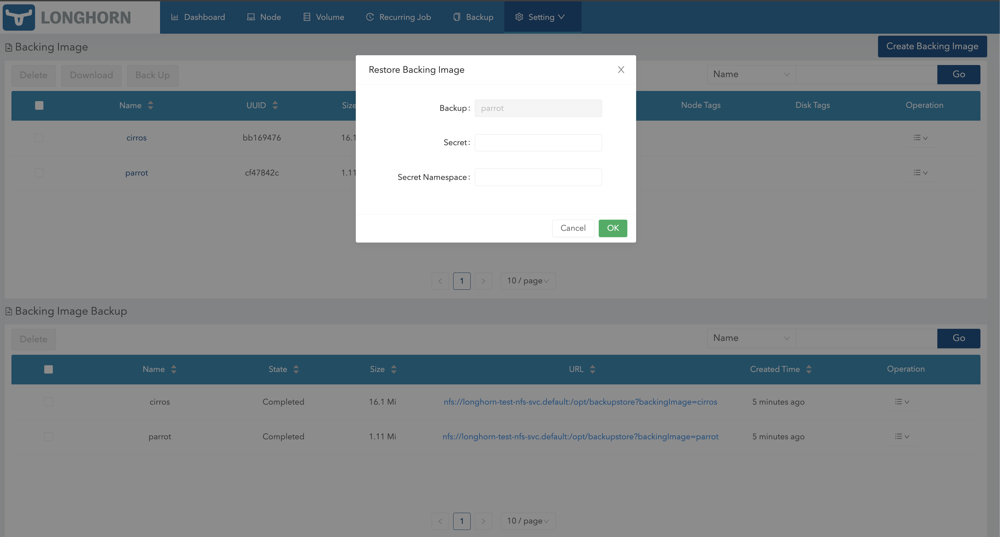

Backing Image Backup
Longhorn supports backing up of backing images.
Prerequisites
You must first set up a backup target. If you skip this crucial step, the missing backup target will prevent Longhorn from creating a backup of the backing image.
Create a Backup of a Backing Image
Because backing images are globally unique within the Longhorn system, the corresponding backups are also globally unique and are identified using the same name.
Create a Backup Using YAML
Example of backing image:
apiVersion: longhorn.io/v1beta2
kind: BackingImage
metadata:
name: parrot-backup
namespace: longhorn-system
spec:
backingImage: parrot
backupTargetName: default
sourceType: download
sourceParameters:
url: https://longhorn-backing-image.s3-us-west-1.amazonaws.com/parrot.raw
checksum: 304f3ed30ca6878e9056ee6f1b02b328239f0d0c2c1272840998212f9734b196371560b3b939037e4f4c2884ce457c2cbc9f0621f4f5d1ca983983c8cdf8cd9aExample of YAML code used to create a backup of the sample backing image:
apiVersion: longhorn.io/v1beta2
kind: BackupBackingImage
metadata:
name: parrot
namespace: longhorn-system
spec:
userCreated: true
labels:
usecase: test
type: raw-
name: If the names are not unique, Longhorn will not be able to create a backup of the backing image. -
backingImage: Backing image of the backup. -
backupTargetName: Endpoint used to store and access the backup in the backupstore. -
userCreated: Set the value totrueto indicate that you created the backup custom resource, which enabled the creation of the backup in the backupstore. The valuefalseindicates that the backup custom resource was synced from the backupstore. -
labels: You can add labels to the backing image backup.

Restore a Backing Image from a Backup
You can restore a backing image in another cluster after creating a backup in the backupstore.
Example of YAML code used to restore a backing image:
apiVersion: longhorn.io/v1beta2
kind: BackingImage
metadata:
name: parrot-restore
namespace: longhorn-system
spec:
sourceType: restore
sourceParameters:
# change to your backup URL
# backup-url: nfs://longhorn-test-nfs-svc.default:/opt/backupstore?backingImage=parrot
backup-url: s3://backupbucket@us-east-1/?backingImage=parrot
concurrent-limit: "2"
checksum: 304f3ed30ca6878e9056ee6f1b02b328239f0d0c2c1272840998212f9734b196371560b3b939037e4f4c2884ce457c2cbc9f0621f4f5d1ca983983c8cdf8cd9a
|
Restore from a Backup Using the Longhorn UI
-
Go to Setting → Backing Image.
-
Select the backup that you want to use, and then click Restore in the Operation menu.
-
If you are restoring an encrypted backing image, specify the
SecretandSecret Namespace. -
Click OK.

|
Longhorn currently does not store secret-related information in backing image backups. You must specify the secret and secret namespace when restoring encrypted backing images. This issue will be addressed in a future release. |
Volume with a Backing Image
When you create a backup of a volume, Longhorn automatically creates a backup of its backing image.
You can restore a volume with a backing image. If the image already exists in the cluster, Longhorn uses the image directly. If the image exists in the backupstore but not in the cluster, Longhorn automatically restores the backing image.